Next: Stability of explicit models Up: Explicit models for vertical Previous: Explicit models for vertical Contents
Some authors use simplifying assumptions to derive more compact forms of the expressions for the solution in (74). In the following, a few examples, which are special cases of the general solution discussed here, are reviewed.
In deriving their version of the general solution (74),
Canuto et al. (2001) e.g. assumed
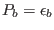 and constant
 . Under these conditions, because of (72), the
dependence on
. Under these conditions, because of (72), the
dependence on
 dissapears, and the counter-gradient term
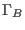 in (74) drops. It was further assumed that
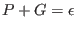 in (65) only, leading to
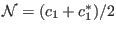
and
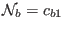. These particularly simple expressions
linearize the system, and a fully explicit solution can be obtained, provided
dissapears, and the counter-gradient term
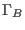 in (74) drops. It was further assumed that
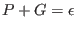 in (65) only, leading to
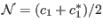
and
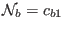. These particularly simple expressions
linearize the system, and a fully explicit solution can be obtained, provided
 and
and  are known. Burchard and Bolding (2001)
adopted the solution of Canuto et al. (2001) and complemented it by
are known. Burchard and Bolding (2001)
adopted the solution of Canuto et al. (2001) and complemented it by
 and
and  computed from dynamical equations (`
computed from dynamical equations (` -
- model').
model').
In contrast, Canuto et al. (2001) and Cheng et al. (2002) decided
for a further simplification. They solved (74) with  and
and
 from algebraic expressions. In their case,
from algebraic expressions. In their case,  followed from the
approximation
of (150) (see
section 4.7.30), and
followed from the
approximation
of (150) (see
section 4.7.30), and  from a prescribed length-scale.
from a prescribed length-scale.
Using (74), (77), and (78), it is easy to show that the assumption 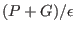 leads to
Investigating the solution of the quadratic equation (80), it
can be seen that  becomes infinite if the factor in front of
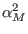 vanishes. This is the case for a certain value of the
Richardson number, 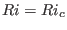, following from
becomes infinite if the factor in front of
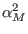 vanishes. This is the case for a certain value of the
Richardson number, 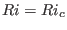, following from
|